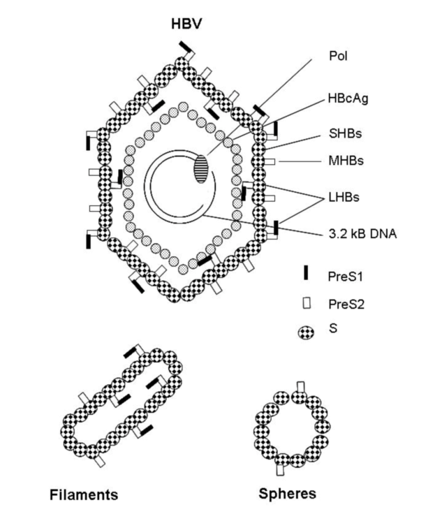
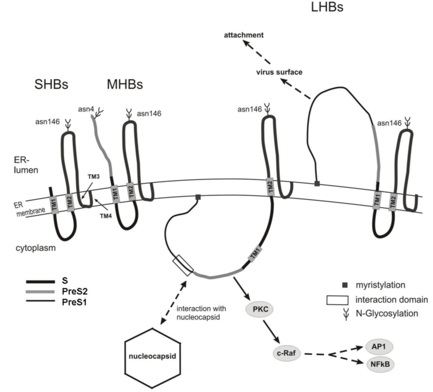
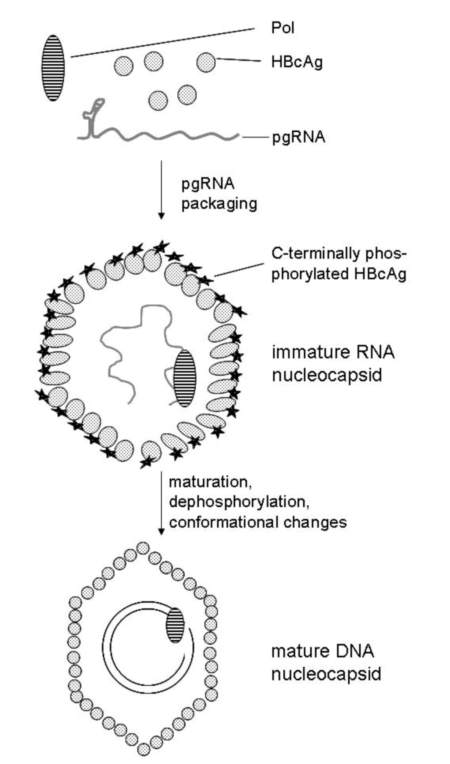

Hepatitis B Virus
HBV
A Reference
Content created for Ankara Biyoteknoloji Araştırma San ve Tic Ltd Şti.
Project pages for the cloning and expression of recombinant proteins for HBV can be accessed from the links below:
See also a PowerPoint presentation on HBV
| Host/Target Organism | Source | Family/Genus | Length/Size (bp) | Entry date | Other/Comments |
|---|---|---|---|---|---|
| primates (human) | human plasma | Orthohepadnaviridae/ Orthohepadnavirus | 3215 nt | 7 June 1987 | genome is serotype ayr; compared to three other subtypes |
| duck | Avihepadnaviridae/ | 3027 nt | 11 Nov 1992 | ||
| ground squirrel | Orthohepadnaviridae/ Orthohepadnavirus | 3311 nt | 2 Aug 1993 | linear DNA | |
| heron | Avihepadnaviridae/ | 3027 nt | 2 Aug 1993 | ||
| Sheldgoose | Avihepadnaviridae/ | 3051 nt | 14 June 2004 | ||
| Ross's goose | Avihepadnaviridae/ | 3018 nt | 14 June 2004 | ||
| snow goose | Avihepadnaviridae/ | 3024 nt | 25 June 2004 |
Genome sequences at NCBI:
For these circular chromosomes, in most case nt 1 is a EcoRI restriction site cut point.
| Gene | Gene Product | |||||||
|---|---|---|---|---|---|---|---|---|
| Name | Other Name(s) | Genome Position: Start-End | Elements Type: Name | Elements Positions | Gene Product Type: Name | Gene Product Function | Translation Length: Start-End | Domains/Features |
| HBVgp1 | polymerase | 2307→3215|1→1623 | protein: polymerase | RNA-dependent DNA polymerase (reverse transcriptase) | 843 aa (94463 Da) genome: 2307→3215|1→1623 |
| ||
| HBVgp2 | pre-S1/pre-S2/S | 2848→3215|1→835 | protein: S protein | major envelope protein | 226 aa (25248 Da) genome: 155→835 |
| ||
| protein:
M protein
(middle S protein) pre-S2/S | envelope protein | 281 aa (31021 Da) genome: 3205→3215|1→835 |
| |||||
| protein:
L protein
(large S protein) pre-S1/pre-S2/S | envelope protein (receptor binding) | 400 aa (43538 Da) genome: 2848→3215|1→835 |
| |||||
| HBVgp3 | X | 1374→1838 | protein: X protein | unknown, required for viral replication | 154 aa (16378 Da) genome: 1374-1838 |
| ||
| HBVgp4 | precore/core | 1814→2452 | protein: Core and e antigen | major core (nucleocapsid) protein | 183 aa (20964 Da) genome: 1901→2452 |
| ||
| protein: precore/core | major core (nucleocapsid) protein | 212 aa (24158 Da) genome: 1814→2452 | ||||||
| Genotype | Subgenotypes | Distribution | Reference Standards (Accession Number) | Publication Reference | Serological Subtypes |
|---|---|---|---|---|---|
| A | 2 | northwest Europe, North America, Africa | X02763 (A) AF297621 (Aafr) |
Owiredu et al. (2001) | adw2, ayw1 |
| B | 4 | southeast Asia | D00330 (Ba) AB073858 (Bj) | Okamoto et al (1988)
Sugauchi et al (2002) | adw2, ayw1 |
| C | 4 | southeast Asia | AB033556 (C) AB048704 (Caus) | Okamoto et al (1988)
Sugauchi et al (2001) | adw2, adrq+, adrq−, ayr, adr |
| D | 4 | Mediterranean basin, Near East (most common) | X02496 | Bichko et al (1985) | ayw2, ayw3, ayw4 |
| E | east Africa | X75657 | Norder et al (1994) | ayw4 | |
| F | 2 | western hemisphere | X69798 | Naumann et al (1993) | adw2, ayw4, adw4q− |
| G | a few individuals in France, USA, Germany | AF160501 | Stuyver et al (2000) | adw2 | |
| H | central America (Amerindians) | AY090454 | Arauz-Ruiz et al (2002) | adw4 |
| Primer name | Primer locationa | Primer locationb | Primer sequence |
|---|---|---|---|
| OS1 | nt 1408–1430 | 2808–2830 | 5′GCCTCATTTTGTGGGTCACCATA-3′ |
| OS2 | nt 2798–2817 | 977–996 | 5′-TCTCTGACATACTTTCCAAT-3′ |
| JM | nt 1676–1696 | 3076–3096 | 5′-TTGGGGTGGAGCCCTCAGGCT-3′ |
| TTA3 | nt 2128–2145 | 307–325 | 5′-AAATTCGCAGTCCCCAAC-3′ |
| Seq2 | nt 2121–2139 | 300–318 | 5′-TTGGCCAAAATTCGCAGTC-3′ |
|
a Numbering according to HPBADR1CG
b Numbering according to EcoRI site From Table 5 of Bartholomeusz A, Schaefer S (2004) Rev. Med. Virol. 14, 3-16. | |||
HBV is a double-stranded DNA virus with partial single-stranded nature. The virion specifically infects hepatocytes of the animal liver. Viruses specific for and infecting the liver of several mammalian and avian species have been identified and characterized.
The virus synthesizes three forms of the surface antigen. All the three forms have a C-terminal portion in common. The S (short form) is 226 amino acids. The M (pre-S2) form contains a longer N-terminal extension of 55 amino acids and then the 226 amino acids that are the S form, a total of 281 amino acids. The L (pre-S1) form contains the M sequence plus either 109 or 118 additional amino acids to the N-terminus, a total of either 390 or 399 amino acids. The difference in length of L is dependent on which of the current eight genotypes the virus is.
The core translated S sequence is quite hydrophobic and likely the part of the surface antigen that anchors to the host plasma membrane that envelopes the viral protein coat. The S protein structure shows hydrophobic region (putative transmembrane segment) and two hydrophilic regions. The surface exposed region is probably between amino acids 99-168. Virions can be composed of S proteins exclusively and the viral particles look the same as those which have mixes of M and L proteins.
The pre-S domains in M and L are hydrophilic and likely lie outside the envelope membrane. They contain glycosylation sites. In addition, the L protein N-terminus is myristylated. The pre-S domain may very likely be involved in the infection process, and they contain antigenic sites reactive to B and T lymphocytes. The pre-S domain bind to hepatocytes and polymerized human serum albumin.
Before the molecular structure (DNA and protein sequences) were understood, different HBV types were distinguished serologically. Immunochemical methods included passive hemagglutination (pHA) and radioimmunoassay (RIA). After ELISA was introduced in 1971, an ELISA-based assay was reported by Wolters et al (1976). Two types were known in 1977 (ad and ay). Tanaka et al introduced the Hepanostika test kit in 1980.
Okamoto et al (1988) attempted to define the serological subtypes at the nucleotide sequence level, with sequence variations of 2-8%. Norder et al (1992) identified the amino acids responsible for the serological subtype variation:
The variation is because of Lys→Arg sequence transitions.
Differences between ayw1 and ayw2 were at five amino acid positions: F134Y, T143S, A159G, Y161F, V168A; the ayw1 and adw2 did not differ in these five positions however, but they did differ as follows T114S, K122R, N131T. The w1 subtype requires R122. The w3 subtype requires a T127. The w4 subtype requires L127 and S140. Note that in other types, the 127 position is Pro, so a transition to either Leu or Thr is a significant structural change.

The figure above shows a schematic structure of the HBV particle and subviral particles. HBV is an enveloped virus with a diameter of about 42 nm (42 nm particle). The envelope is formed by the three viral surface proteins LHBs, MHBs and SHBs that surround the viral nucleocapsid. The core protein (HBcAg) forms the nucleocapsid that harbors the partially double-stranded circular DNA genome that is covalently linked to the viral polymerase. In the serum of HBV-positive patients, large amounts of non-infectious subviral particles in the form of filaments or spheres (20nm particles) are found; these are composed of the viral surface proteins, but lack the viral nucleic acid.

The figure above shows schematically the structure of the HBV surface proteins. The S-domain is common to all three HBV surface proteins. In the case of the large surface protein (LHBs), TM1 is not used as a start transfer signal, resulting in a cytoplasmic orientation of the PreS1PreS2 region. In a fraction of LHBs the PreSPreS2 domain is posttranslationally translocated across the ER membrane. In this case, the PreS1PreS2 domain faces the lumen of the ER. The two forms of LHBs fulfill different functions. This fraction that faces the ER lumen is exposed to the viral surface in the mature viral particle and is involved in the attachment process. The cytoplasmic form mediates the contact to the nucleocapsid and triggers intracellular signal transduction cascades by the interaction of the PreS2 domain with protein kinase C (PKC).

The figure above shows genome packaging and nucleocapsid maturation. HBV nucleocapsid formation starts when the complex of the RNA pregenome, HBV polymerase and HBcAg dimers has formed. Efficient packaging of the RNA pregenome requires phosphorylation in the C-terminal part of the core protein. Conversion of the immature RNA-containing nucleocapsid to the mature DNA-containing nucleocapsid is associated with dephosphorylation and conformational changes. These significant differences in the structure between the RNA-containing immature nucleocapsid and the mature nucleocapsid trigger the envelopment of the mature nucleocapsid.